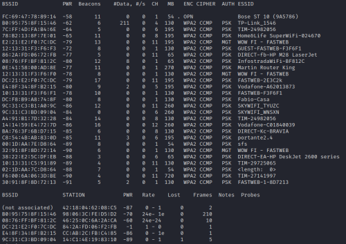
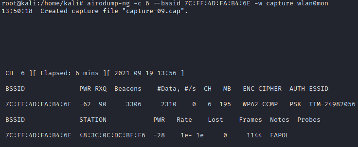

1. Select Network and capture data
1. Discover NetworksCheck the devices around us
| Field | Description |
|---|
| BSSID | MAC address of the access point. |
| PWR | Power level, lower is the negative number and closer we are at that device. If the BSSID PWR is -1, then the driver doesn't support signal level reporting. |
| Beacons | Number of announcements packets sent by the AP |
| # Data | Number of captured data packets |
| #/s | Number of data packets per second measure over the last 10 seconds. |
| CH | Wireless Channel number (taken from beacon packets) |
| MB | Maximum speed supported by the AP. If MB = 11, it's 802.11b, if MB = 22 it's 802.11b+ and up to 54 are 802.11g. Anything higher is 802.11n or 802.11ac. |
| ENC | Encryption algorithm in use. OPN = no encryption,“WEP?” = WEP or higher (not enough data to choose between WEP and WPA/WPA2), WEP (without the question mark) indicates static or dynamic WEP, and WPA, WPA2 or WPA3 if TKIP or CCMP is present (WPA3 with TKIP allows WPA or WPA2 association, pure WPA3 only allows CCMP). OWE is for Opportunistic Wireless Encryption, aka Enhanced Open. |
| CIPHER | The cipher detected. One of CCMP, WRAP, TKIP, WEP, WEP40, or WEP104. |
| AUTH | The authentication protocol used. One of MGT (WPA/WPA2 using a separate authentication server), SKA (shared key for WEP), PSK (pre-shared key for WPA/WPA2), or OPN (open for WEP). |
| ESSID | Shows the wireless network name. The so-called “SSID”, which can be empty if SSID hiding is activated. In this case, airodump-ng will try to recover the SSID from probe responses and association requests. See this section for more information concerning hidden ESSIDs. |
2.
Capture data from a networkairodump-ng -c 6 --bssid [AccessPointMACaddress] -w capture wlan0mon
-c [int]→ How to Select Specific Channels or a Single Channel. The “–channel” (-c) option allows a single or specific channels to be selected.
--bssid <bssid> → select the Access Point/Router which packets we want to capture
-w [file] → save packets and the possible handshake in a file. IMPORTANT because we need it to crack the password
